What is Primed Minds?
Primed Minds is a tool to inspire you mathematically!
Showcasing the joy and beauty inherent in mathematics, our Explorations, unlike traditional presentations, are a wild affair that impart the thrill of discovery by alternately entertaining and actively engaging.
Each Exploration consists of a sequence of short entertaining videos (30-90 second), and interactive content that immerse you in the experience of being a real mathematician! You'll experience how a dead-end alley becomes an A-ha moment. You'll smell the mathematical flowers that blossom around intractable unsolved mysteries. And you might even learn a little math along the way.
Who is this for?
Primed Minds is aimed squarely at middle and high school students, though many of the Explorations are actually accessible to grade-schoolers. This is not your standard curriculum. Primed Minds is designed to inspire interest, rather than educate on specifics.
While familiarity with some very basic concepts is sometimes assumed, even in those cases interest is often piqued well before formal understanding sinks in.
Anyone curious to explore the magical land of the mind will enjoy our Explorations. Mathematics is, afterall, the one thing we can be sure that aliens too will appreciate.
Philosophy
Before taking your retinue to a new territory, you launch an exploration. You get a taste and decide whether heading out even makes sense.
Unfortunately, unlike language arts where we inspire children with great works of fiction before miring them in the drudgery of spelling and grammar, mathematics is traditionally taught by adhering to a didactic approach of presentational lessons followed by drills.
The thing is, we make the most effort and learn best when we're excited.
With this thinking in mind, the Explorations on Primed Minds are designed to inspire rather than teach. It's a radical idea!
The first time we encounter new ideas, they are fuzzy, and that's okay! Nobody understands all the themes and motifs in Winnie the Pooh the first time they read it (or more likely, are read it), the book simply becomes richer with each pass. So it is with mathematics and it's time it was presented with this in mind.
Finally, the pedagogical reasoning behind the structure of Primed Minds' Explorations is simple. Short, light and quickly paced videos inject energy, context and excitement, while interactive puzzles foster engagement and help solidify concepts. The interactive portions also give very natural breathing room, permitting students to adjust the pace of their progress to their understanding (something that videos alone struggle with).
What is mathematics anyway?
Mathematics is to think deeply about simple things.
And doing so is fun!!
Mathematics is about exploring ideas that present themselves as puzzles, intriguing patterns, connections and sheer beauty.
How do I try an Exploration?
There's been enough talk, just pick one and dive in!
Are there any teacher resources?
Yes! We have lesson plans to accompany Exlporations that expand and relate materials to standard curriculum. Check our Resources Page for more information
 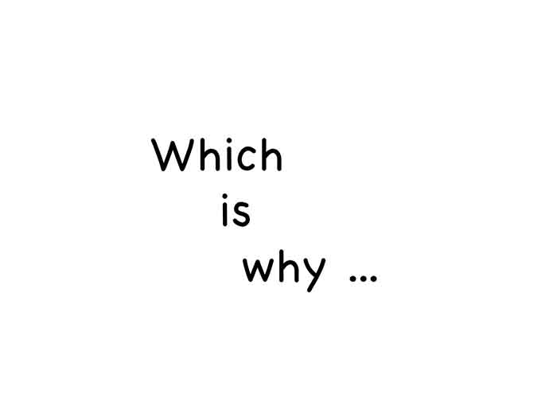
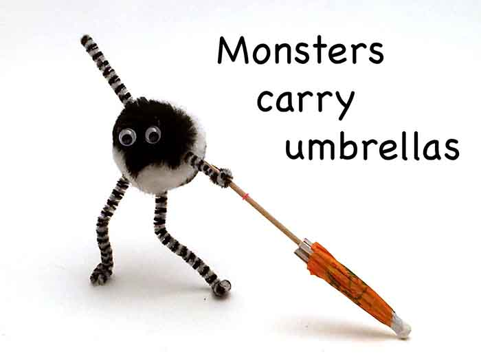
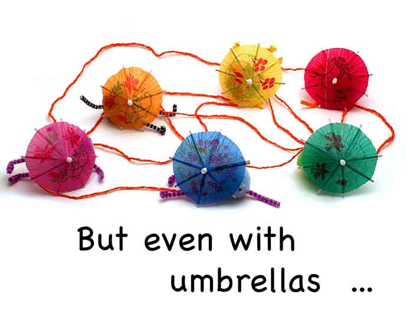
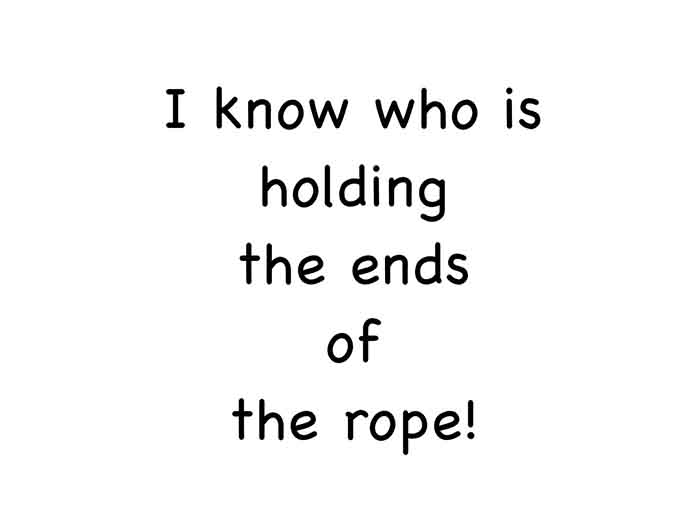
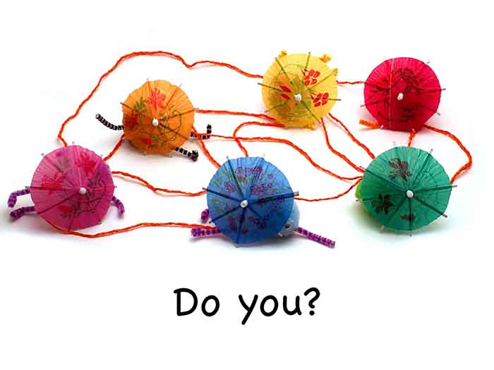
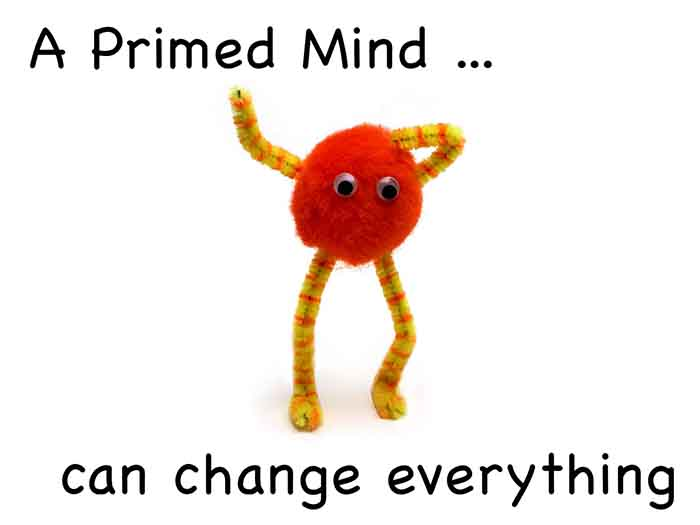
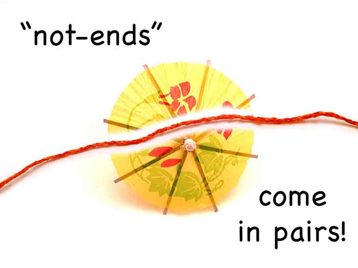
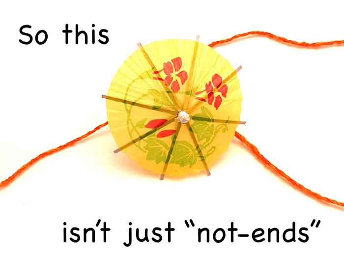
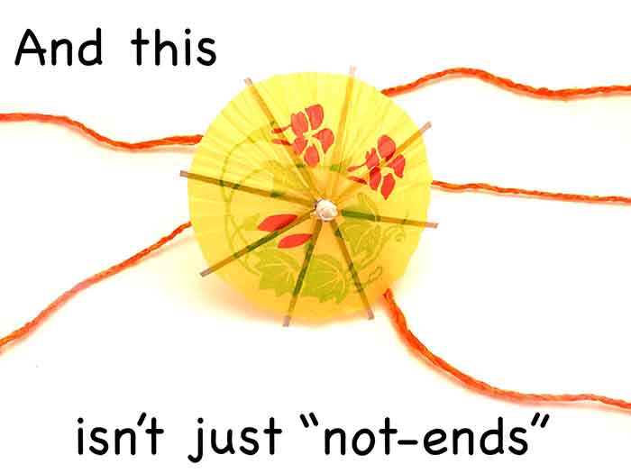
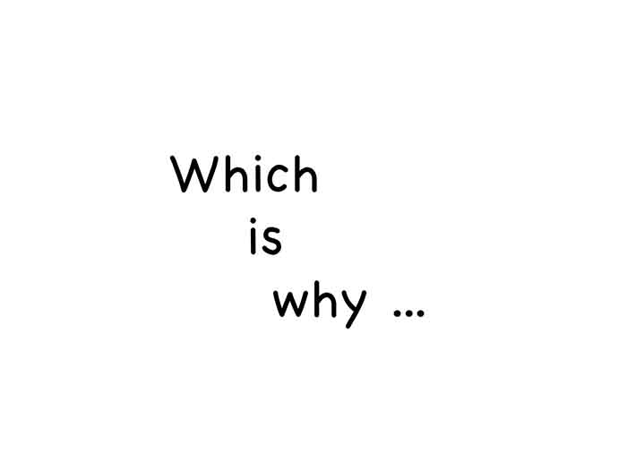
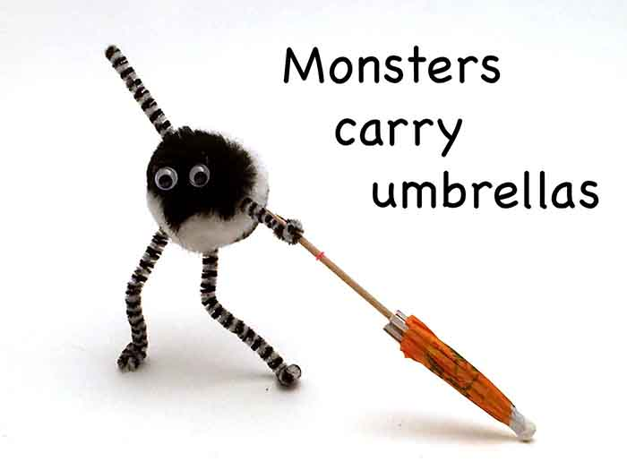
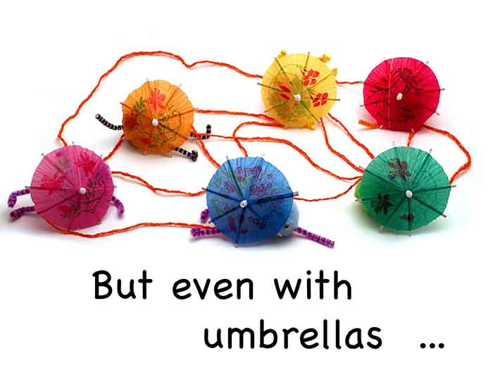
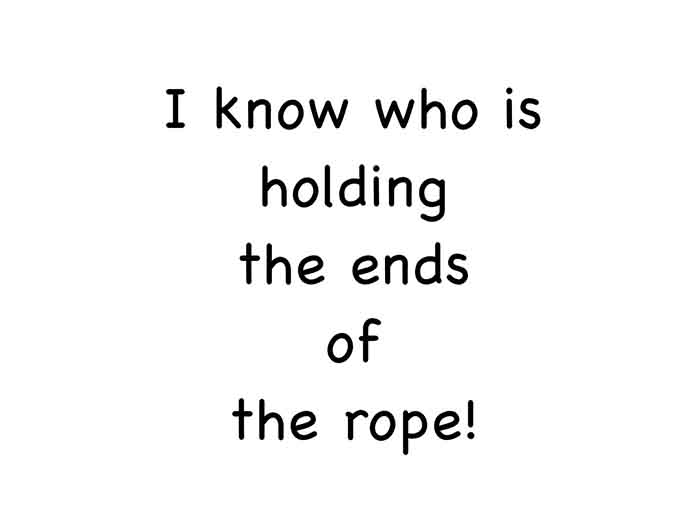
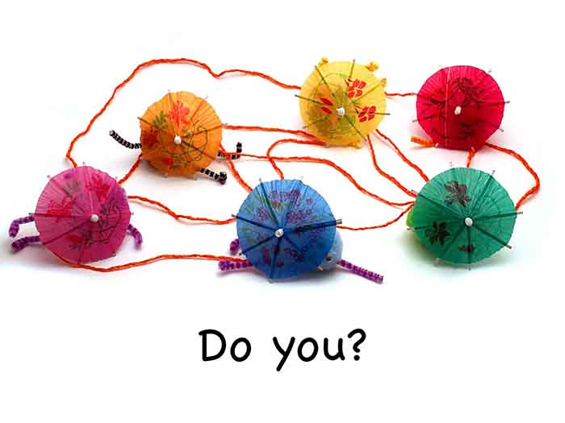
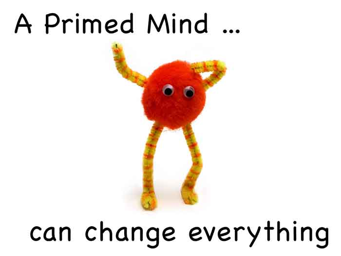
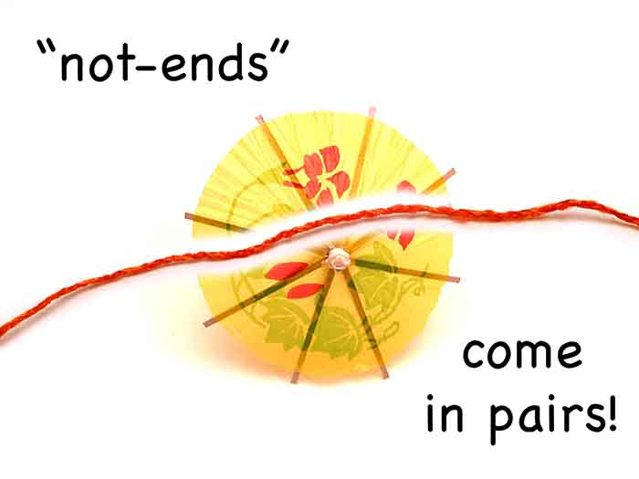
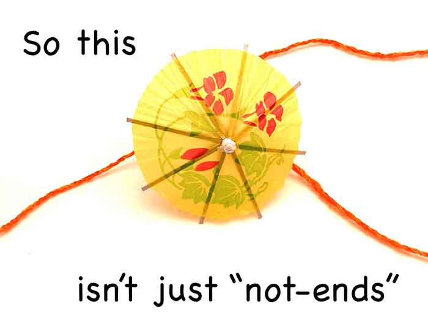
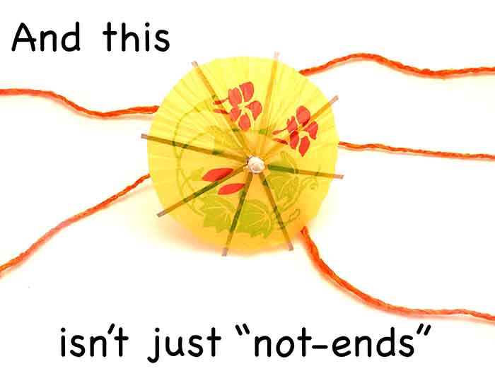